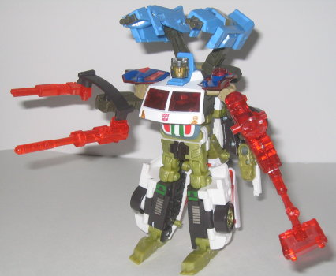
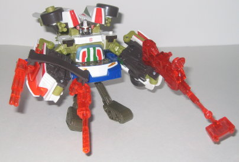

Tow-Line's vehicle mode
is, oddly enough, a news van. How they got the name "Tow-Line" from a news
van, I'll never know. Anyways, this mode looks really kiddish. In fact,
it almost looks like it could belong in that Go-Bots line. The proportions
are very rounded, and the van has a very "clunky chunky" look to it. The
mold detailing also is slightly on the sparse side as well, magnifying
this effect. And, although the paint detailing is for the most part alright,
they made a rather silly decision for the red-and-silver stripes on the
sides-- they go right through the ladders molded onto the sides of the
van, like they aren't even there. So we have striped ladders, too. It just
looks a little lazy, to me. Still, the overall color scheme is pretty good-
blue, white, and red work very well together, and the accent colors fit
as well. The satellite transmitter on top looks pretty cool, as well- the
flat panel can even rotate around if you so wish. (The flat panel tends
to come off a bit easily when you transform it into a gun, though.) Tow-Line's
silver Powerlinx symbol is on his right door, while his Autobot spark crystal
is on his left.
When you transform Tow-Line
into robot mode, he actually splits in half- one half becomes his core
robot form, while the other becomes a sort of stretcher/battle platform.
Tow-Line's robot mode actually isn't all that bad-- the chest is a bit
too wide and smooth, but other than that, his proportions are pretty good,
and his colors work well together. His articulation is also good- he can
move at the head, shoulders (at two places), elbows, hips, and knees. Tow-Line's
weapon is rather odd, however- it looks like some weird kind of metal detector,
not a gun. So unless it actually is SUPPOSED to be some sort of gun, I
guess Tow-Line isn't too skilled at combat.
The stretcher/battle platform is very weak,
and looks downright goofy. It's basically just the bottom half of the vehicle
mode, folded out, and with weird wheel-feet splayed under it. On the holes
on top, you can put a gun or lay down a Transformer for repairs or something,
but it still just looks like a splayed van half.


Tow-Line's robot half
is used for the upper part of a Powerlinx robot, and it really doesn't
involve much more than folding the bottom half of his body back behind
his top half and sticking the legs out to form some sort of odd-looking
guns. It doesn't really look that bad- it's certainly more proportional
and has less kibble than most other Powerlinx robot forms- but the "legs
as guns" idea is a little weak.
If you use Tow-Line
as the lower part of a Powerlinx robot, you use his battle plaform. Only...
you don't change its configuration at all for Powerlinxing. It stays as
is. So when you put another robot on top of this platform, it looks absolutely
ridiculous. I'd almost think it was a joke on behalf of Hasbro, it looks
so goofy. There's no real legs, the lower body extends out waaay farther
back than any other Powerlinx robot half, and it just doesn't fit with
ANY Powerlinx robot at all. Don't even bother this configuration, it's
not even worth the minimal amount of effort required. (Though, because
Tow-Line can form both the top half and bottom half of a Powerlinx robot
at the same time, you can Powerlinx him to himself. Weird.)
Tow-Line is a below-average 'bot, especially when you put his ridiculous "battle platform" into the equation. His actual core robot form isn't half bad, but the chubby vehicle mode and battle platform completely overshadow its coolness. You're better off getting pretty much any other deluxe in the Energon line.
Review by Beastbot